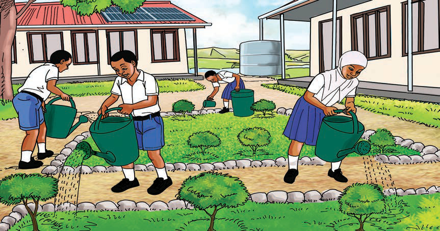

Utunzaji wa mazingira ya shule
Kazi ya kufanya namba 3
1.
Bainisha maeneo yanayohitaji kufanyiwa usafi na kuboreshwa katika mazingira unayoishi.
2.
Bainisha aina ya usafi na uboreshaji wa mazingira unaotakiwa kufanyika kwa kila eneo ulilolibaini.
3.
Bainisha vifaa vinavyohitajika kisha, fanya usafi na boresha mazingira uliyoyabaini.
4.
Andika ufupisho wa namna ulivyofanya usafi na kuboresha mazingira unayoishi.
Ni muhimu kuyaweka mazingira ya shule katika hali ya usafi na usalama kama tufanyavyo katika mazingira tunayoishi. Mazingira ya shule hutunzwa kwa kufanya usafi na kurekebisha maeneo yaliyoharibiwa kwa kupanda miti, nyasi na maua. Pia, tunadhibiti utupaji taka ovyo na kufanya usafi wa madarasa, vyoo, na maktaba. Matokeo ya kufanya hivi ni mazingira ya shule kuwa safi, salama na ya kupendeza kama inavyowasilisha katika Kielelezo namba 1.

Kielelezo namba 1: Utunzaji wa mazingira ya shule